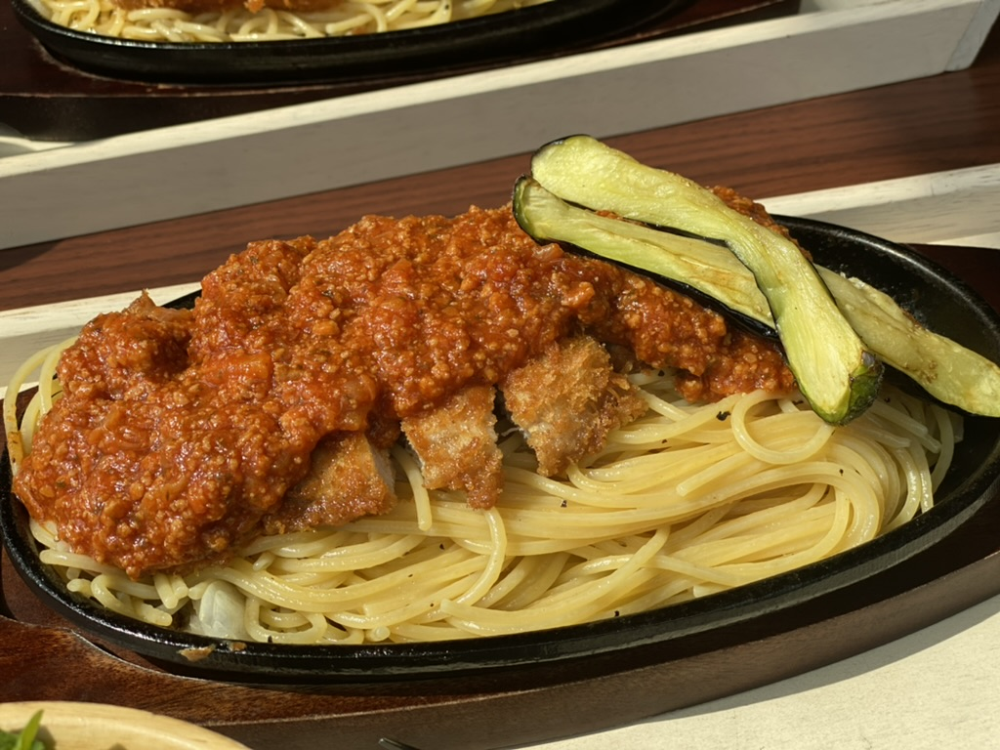
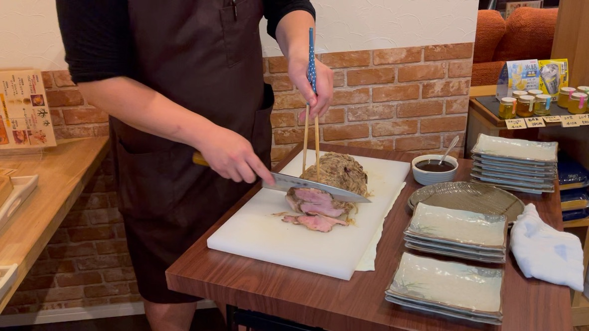
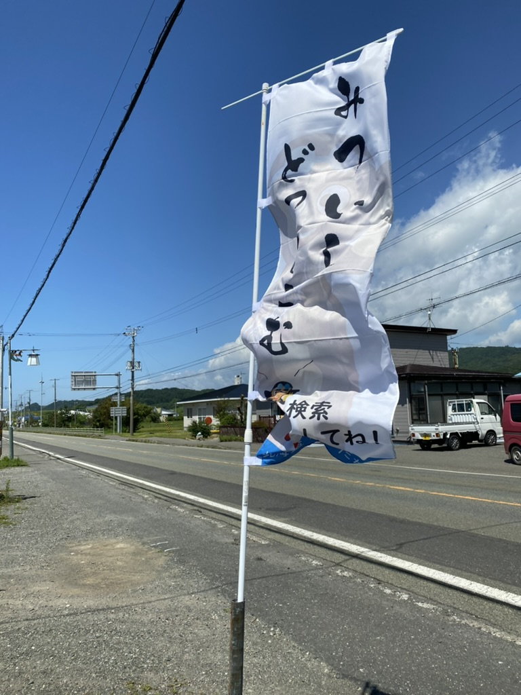
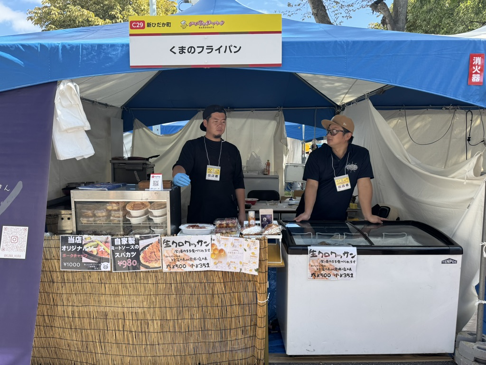
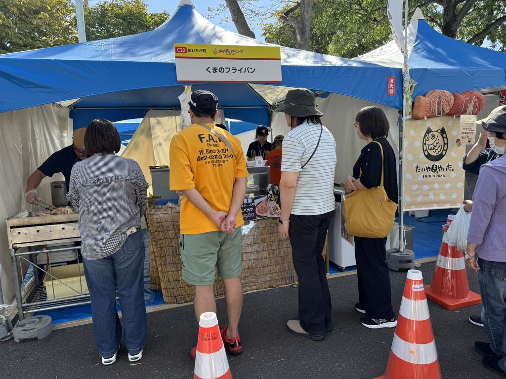
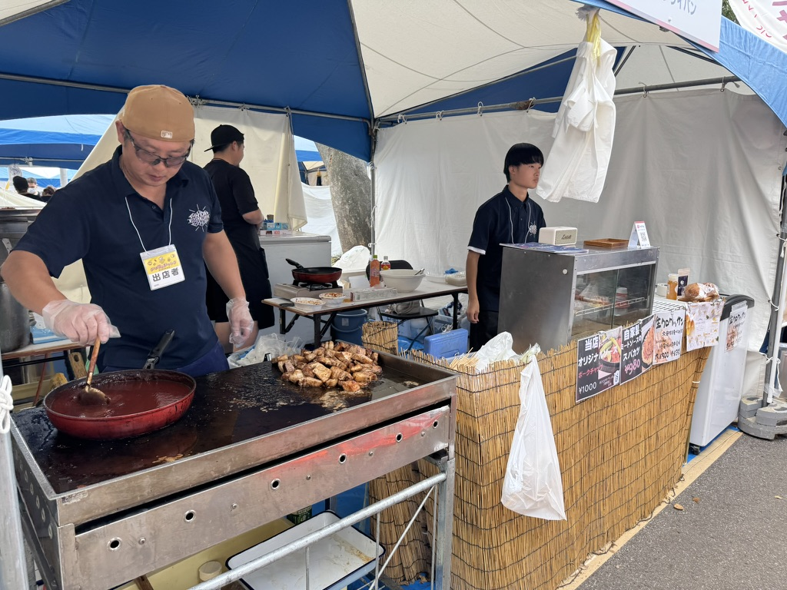
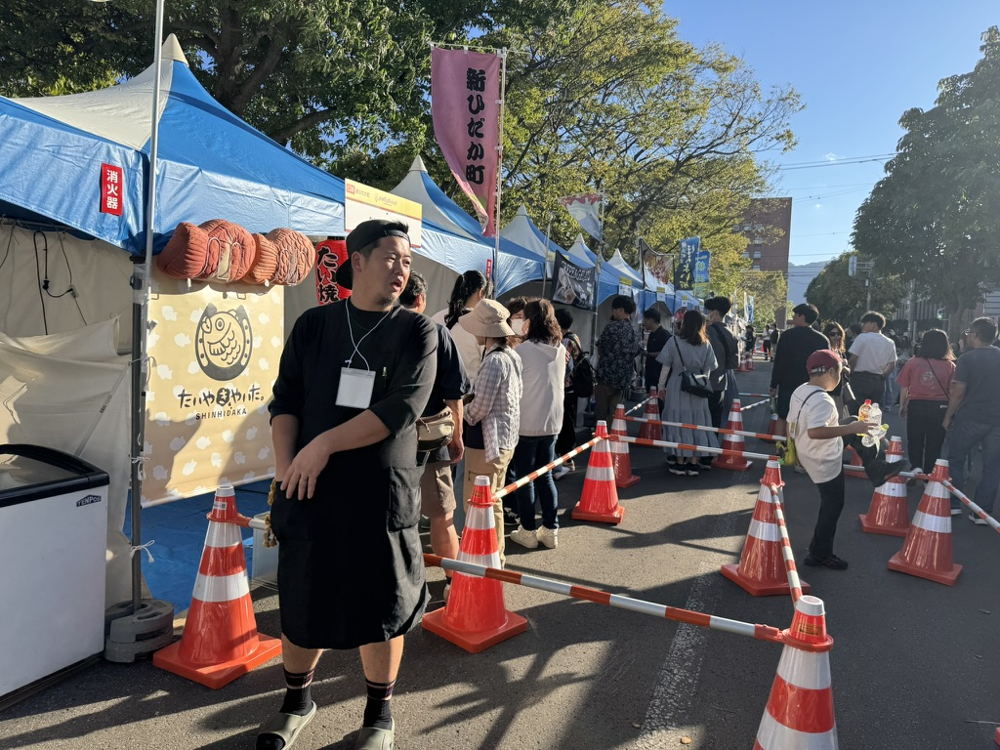
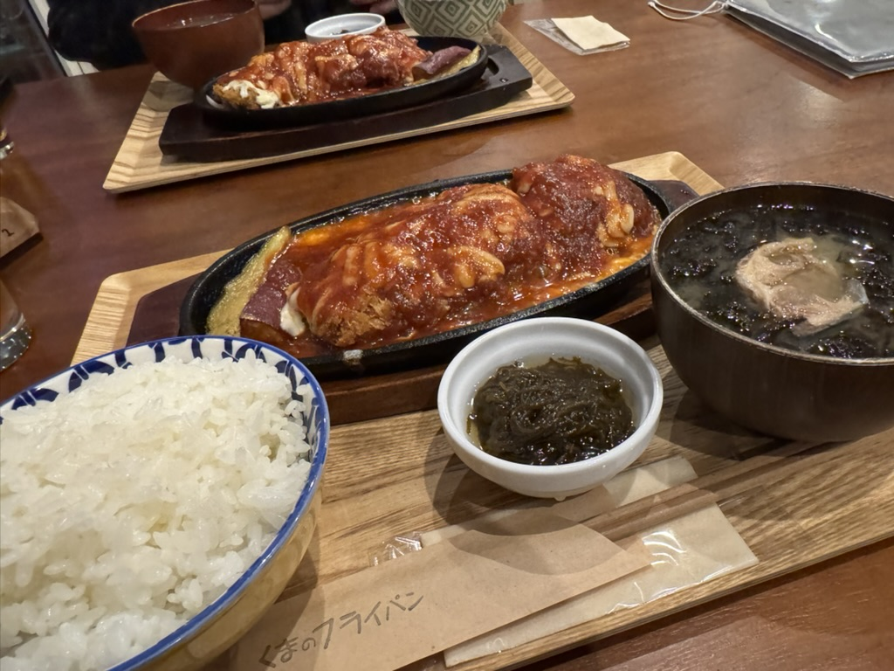
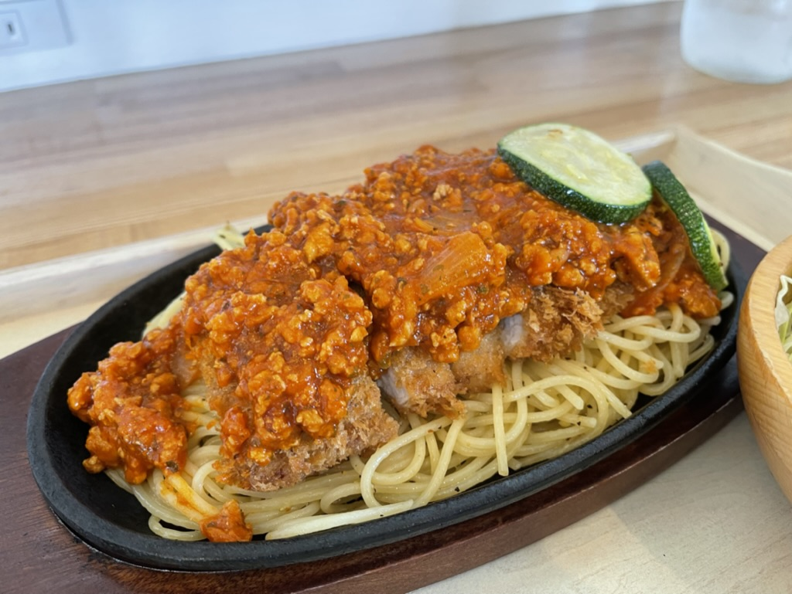
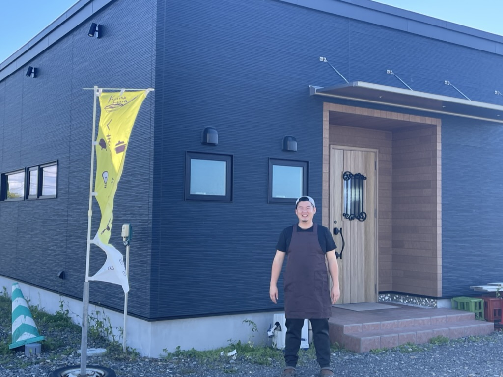

スパカツ
健酵豚ミートソース使用。サラダ付きで、チーズトッピングも楽しめます。
本日の目当て
店内から太平洋を一望でき、若い世代や家族でもゆっくり食事を楽しめる飲食店。キッズスペースやオリジナルメニューもあり、新ひだか町に来たら立ち寄りたい一軒です。
Kitchen
料理はもちろん、オリジナルブレンドのコーヒーや手作りのハンドメイド作品まで。食事、休憩、家族の時間を、三石らしいあたたかさで迎えます。


Event
店舗だけでなく、地域イベントにも精力的に出展。ポークチャップやスパカツなど、くまのフライパンらしい味を外へ届けながら、新ひだか町の魅力も一緒に発信しています。







Access
新ひだか町三石鳧舞の、海の近くの飲食店。ランチ、ディナー、オードブル、弁当、宴会相談まで、用途に合わせて利用できます。